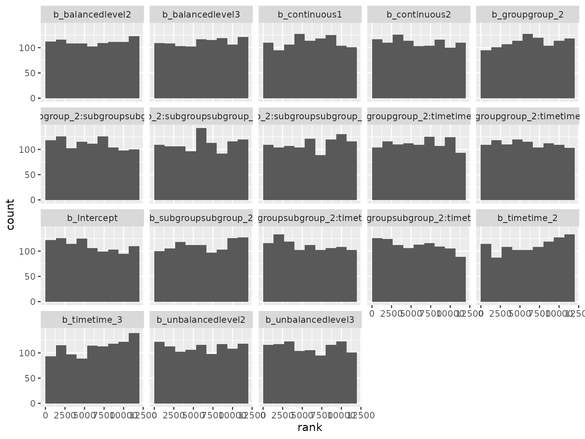
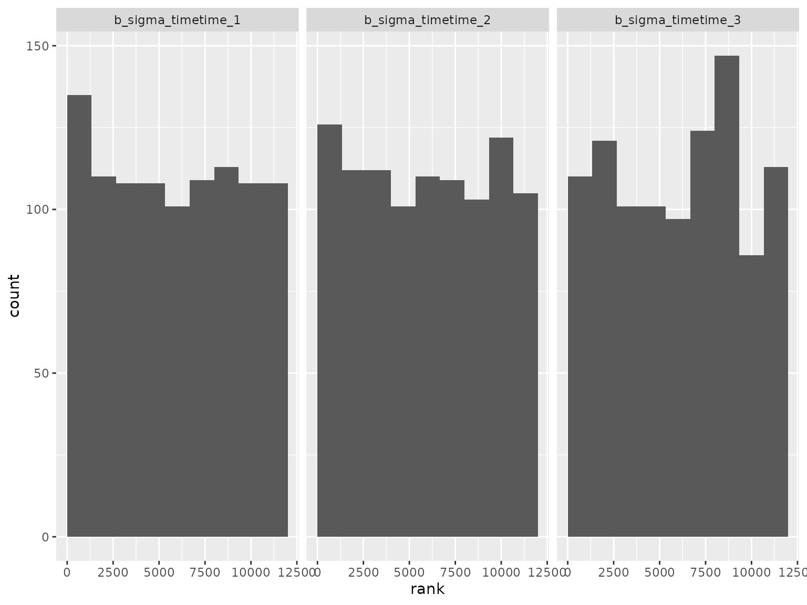
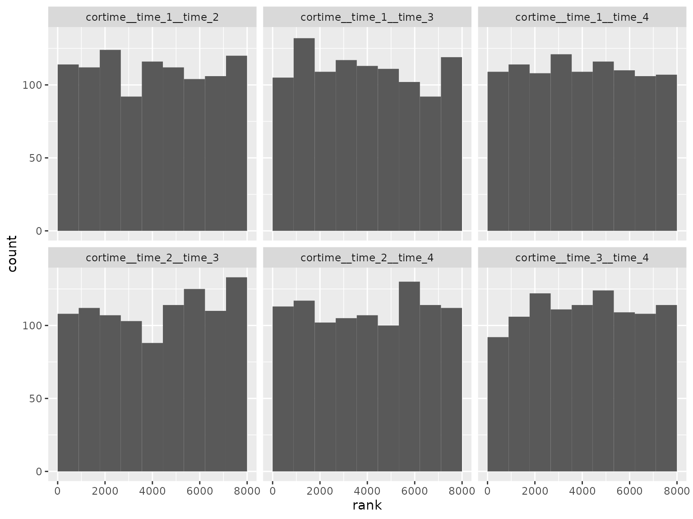
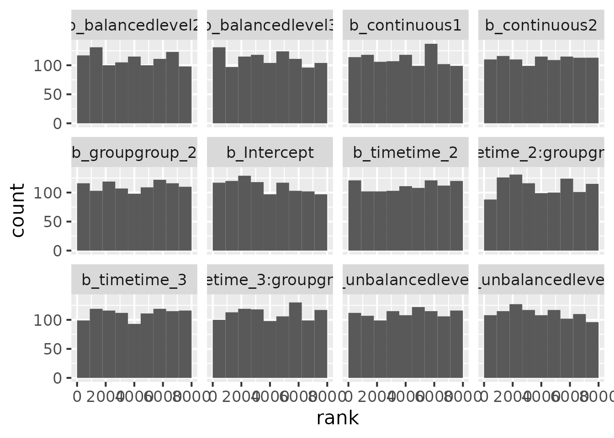
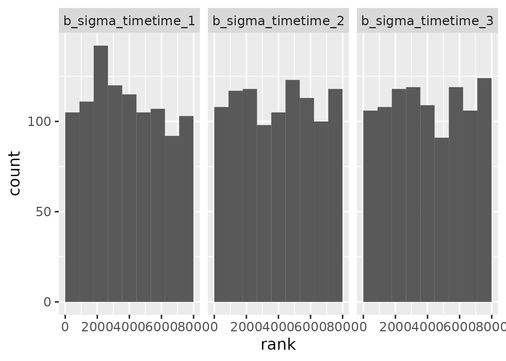
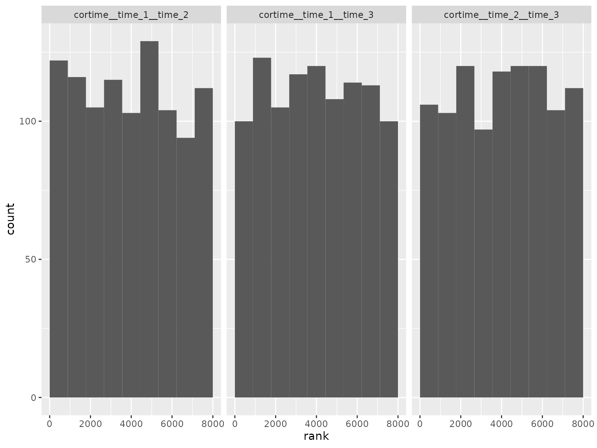

About
This vignette shows the results of a simulation-based calibration
(SBC) study to validate the implementation of the models in
brms.mmrm. SBC tests the ability of a Bayesian model to
recapture the parameters used to simulate prior predictive data. For
details on SBC, please read Talts et al.
(2020) and the SBC R package
(Kim et al. 2022). This particular SBC
study uses the targets
pipeline in the sbc
subdirectory of the brms.mmrm
package source code.
Simple scenario
In the simple scenario, we simulate datasets from the prior predictive distribution assuming 3 treatment groups, 4 time points, 100 patients per treatment group, no adjustment for covariates, and no missing responses. The model formula is:
#> response ~ 0 + group + group:time + time + unstr(time = time, gr = patient)
#> sigma ~ 0 + timeThe prior was randomly generated and used for both simulation and analysis:
fst::read_fst("sbc/prior_simple.fst")
#> prior class coef dpar
#> 1 lkj_corr_cholesky(1.1759) Lcortime
#> 2 normal(-0.108, 1.9497) b groupgroup_1
#> 3 normal(0.0441, 1.3727) b groupgroup_2
#> 4 normal(-0.2303, 0.2806) b groupgroup_3
#> 5 normal(0.0631, 1.6016) b timetime_2
#> 6 normal(0.16, 1.4724) b timetime_3
#> 7 normal(0.0631, 1.7156) b timetime_4
#> 8 normal(0.0389, 2.2844) b timetime_1 sigma
#> 9 normal(0.1793, 1.808) b timetime_2 sigma
#> 10 normal(0.1637, 1.4719) b timetime_3 sigma
#> 11 normal(0.0186, 0.7794) b timetime_4 sigmaThe following histograms show the SBC rank statistics which compare the prior parameter draws draws to the posterior draws. If the data simulation code and modeling code are both correct and consistent, then the rank statistics should be uniformly distributed.
library(dplyr)
library(ggplot2)
library(tibble)
library(tidyr)
read_ranks <- function(path) {
fst::read_fst(path) |>
tibble::as_tibble() |>
pivot_longer(
cols = everything(),
names_to = "parameter",
values_to = "rank"
)
}
plot_ranks <- function(ranks) {
ggplot(ranks) +
geom_histogram(
aes(x = rank),
breaks = seq(from = 0, to = max(ranks$rank), length.out = 10)
) +
facet_wrap(~parameter)
}
simple_ranks <- read_ranks("sbc/simple.fst")Fixed effect parameter ranks:
simple_ranks |>
filter(grepl("^b_", parameter)) |>
filter(!grepl("^b_sigma", parameter)) |>
plot_ranks() Log-scale standard deviation parameter ranks:

Correlation parameter ranks:

Complex scenario
In the complex scenario, we simulate datasets from the prior predictive distribution assuming 2 treatment groups, 2 subgroup levels, 3 time points, 150 patients per treatment group, adjustment for two continuous and two categorical baseline covariates, 30% dropout, and an 8% rate of independent/sporadic missing values. The model formula is:
#> response ~ group + group:subgroup + group:subgroup:time + group:time + subgroup + subgroup:time + time + continuous1 + continuous2 + balanced + unbalanced + unstr(time = time, gr = patient)
#> sigma ~ 0 + timeThe prior was randomly generated and used for both simulation and analysis:
fst::read_fst("sbc/prior_complex.fst")
#> prior class
#> 1 lkj_corr_cholesky(1.4621) Lcortime
#> 2 normal(-0.1661, 2.3091) Intercept
#> 3 normal(-0.1831, 1.8732) b
#> 4 normal(0.1578, 2.8225) b
#> 5 normal(-0.1069, 1.7987) b
#> 6 normal(-0.1071, 0.5407) b
#> 7 normal(-0.1028, 0.464) b
#> 8 normal(-0.007, 0.7129) b
#> 9 normal(0.1007, 1.8179) b
#> 10 normal(-0.1965, 2.9243) b
#> 11 normal(-0.0911, 1.5937) b
#> 12 normal(0.0536, 0.7669) b
#> 13 normal(0.0973, 0.5859) b
#> 14 normal(0.0741, 2.3458) b
#> 15 normal(-0.17, 2.9882) b
#> 16 normal(0.1211, 0.7527) b
#> 17 normal(-0.234, 2.0401) b
#> 18 normal(-0.0457, 2.2697) b
#> 19 normal(-0.181, 2.8068) b
#> 20 normal(0.1093, 2.3647) b
#> 21 normal(-0.0878, 1.165) b
#> 22 normal(-0.2374, 1.5208) b
#> coef dpar
#> 1
#> 2
#> 3 balancedlevel2
#> 4 balancedlevel3
#> 5 continuous1
#> 6 continuous2
#> 7 groupgroup_2
#> 8 groupgroup_2:subgroupsubgroup_2
#> 9 groupgroup_2:subgroupsubgroup_2:timetime_2
#> 10 groupgroup_2:subgroupsubgroup_2:timetime_3
#> 11 groupgroup_2:timetime_2
#> 12 groupgroup_2:timetime_3
#> 13 subgroupsubgroup_2
#> 14 subgroupsubgroup_2:timetime_2
#> 15 subgroupsubgroup_2:timetime_3
#> 16 timetime_2
#> 17 timetime_3
#> 18 unbalancedlevel2
#> 19 unbalancedlevel3
#> 20 timetime_1 sigma
#> 21 timetime_2 sigma
#> 22 timetime_3 sigmaThe following histograms show the SBC rank statistics which compare the prior parameter draws draws to the posterior draws. If the data simulation code and modeling code are both correct and consistent, then the rank statistics should be uniformly distributed.
complex_ranks <- read_ranks("sbc/complex.fst")Fixed effect parameter ranks:
complex_ranks |>
filter(grepl("^b_", parameter)) |>
filter(!grepl("^b_sigma", parameter)) |>
plot_ranks() Log-scale standard deviation parameter ranks:

Correlation parameter ranks:

Conclusion
The SBC rank statistics look uniformly distributed. In other words,
the posterior distribution from the brms/Stan MMRM modeling
code matches the prior from which the datasets were simulated. This is
evidence that both the subgroup and non-subgroup models in
brms.mmrm are implemented correctly.